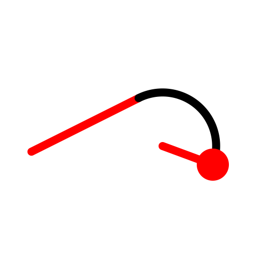
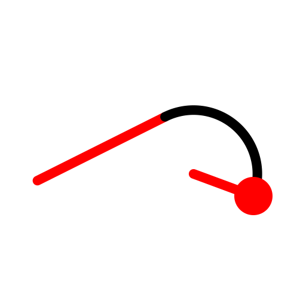
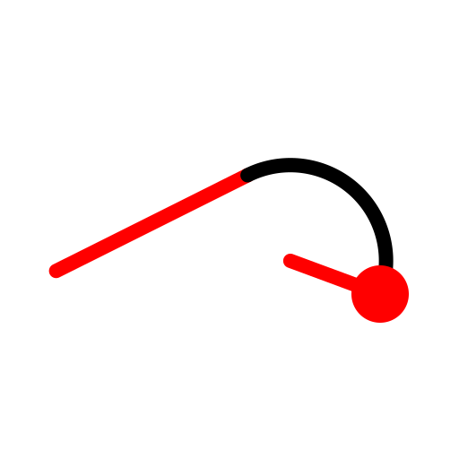
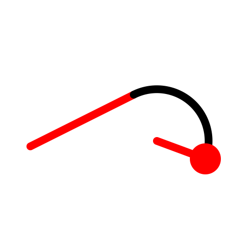
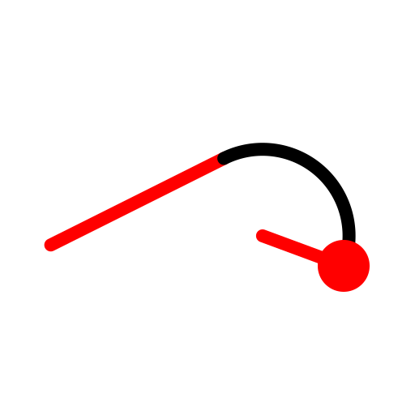

Tangentially connected
Toolbar / Icon:

Menu:
Draw - Arc - Tangentially connected
Shortcut:
A, N
Commands:
arctangential | an
Description:
Draws an arc that connects tangentially to an existing arc or line.
Procedure:
Enter the radius of the arc in the options tool bar.
Specify the end point of the arc.
 


